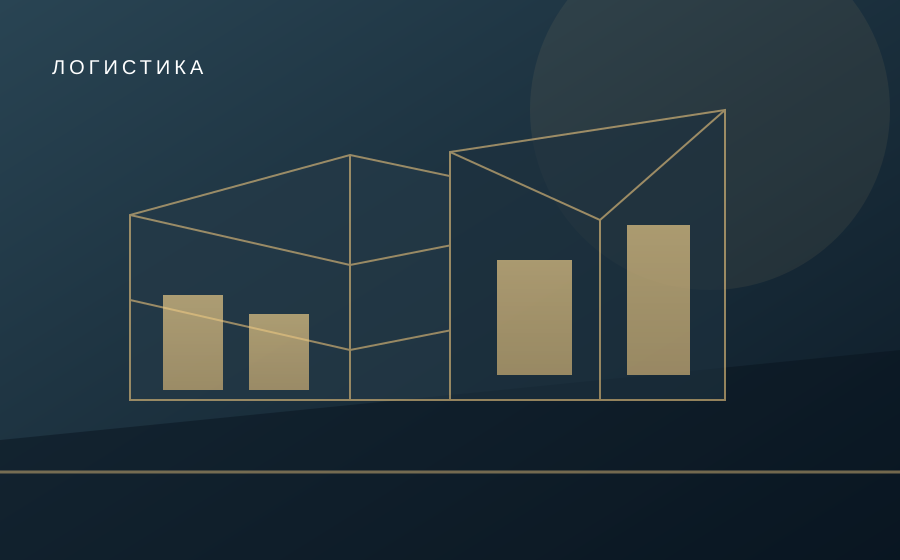
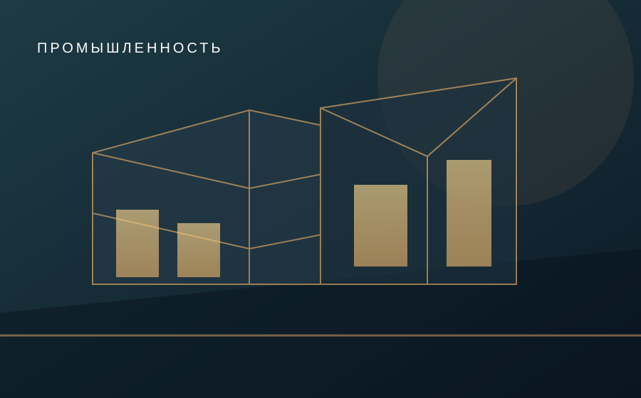

Склады и логистика
Хранение, обработка и отгрузка продукции.
От металлокаркаса до организации полного комплекса работ. Складские, производственные и коммерческие объекты по индивидуальному заданию.
Быстровозводимые здания из металлоконструкций для производства, склада, сервиса, коммерции и административных задач. Подбираем конструктивную схему по назначению объекта и требованиям к площадке.
Параметры пролётов, нагрузки, фундамент, пожарная безопасность, утепление и календарный план — после инженерной проработки.


Хранение, обработка и отгрузка продукции.
Здания для технологических линий и вспомогательных помещений.
Сервисные, торговые и административные пространства.
Стоимость рассчитывается после получения площади, назначения, планируемой локации и характеристик здания.
Обсудить техническое задание ↗